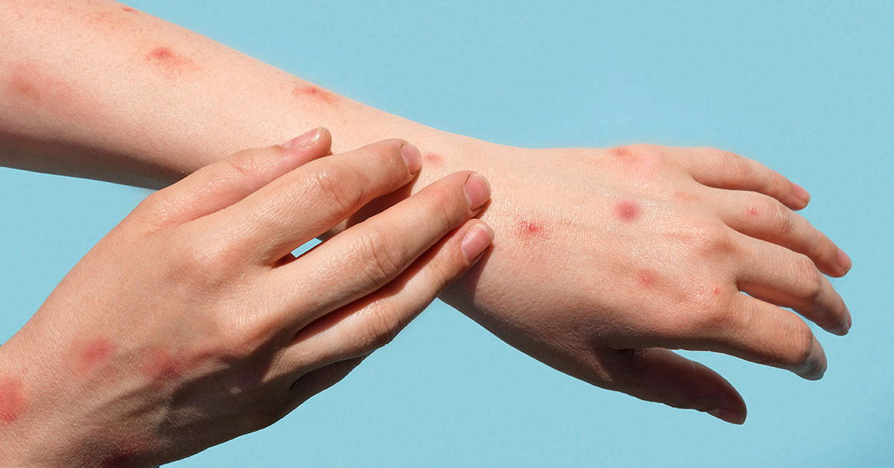
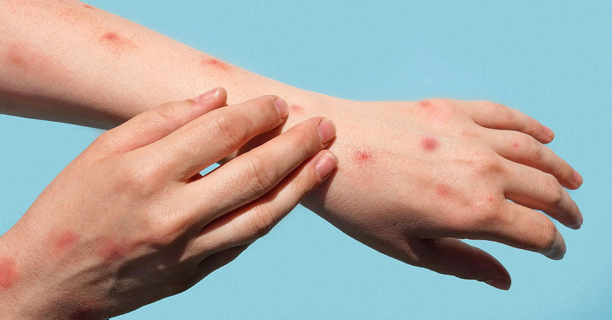
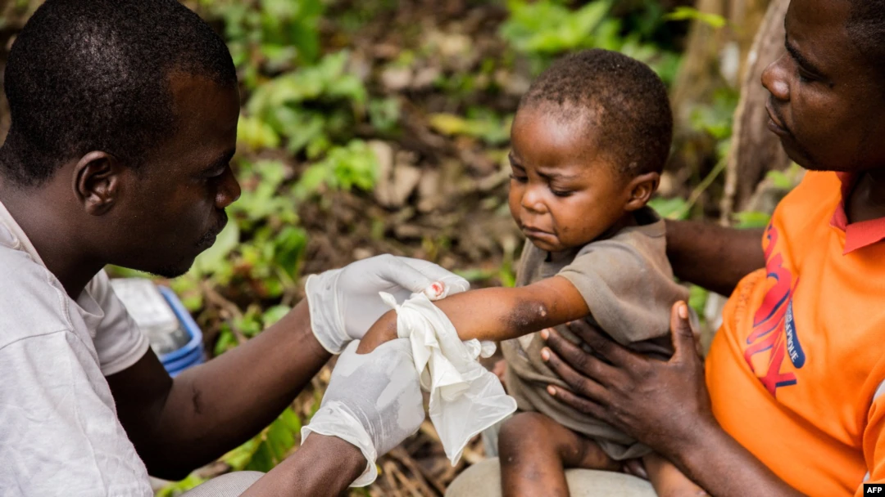
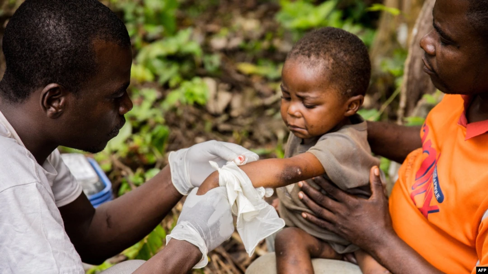
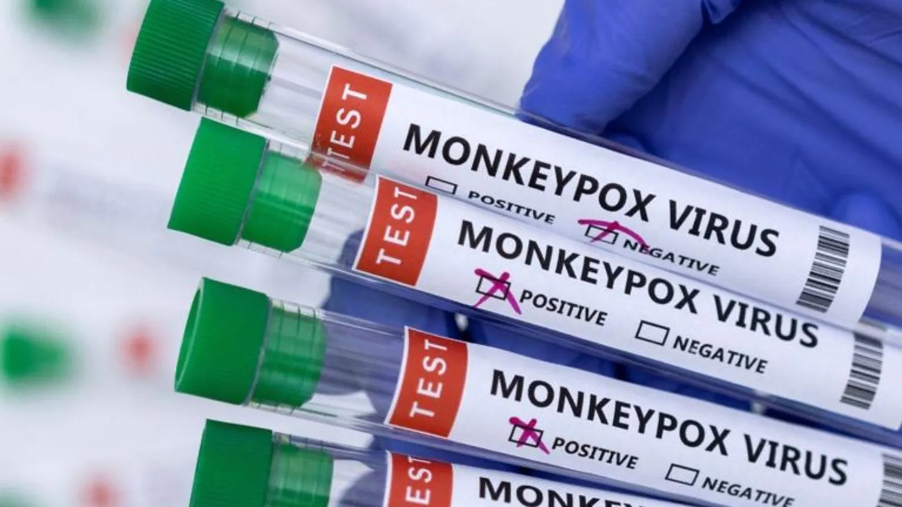
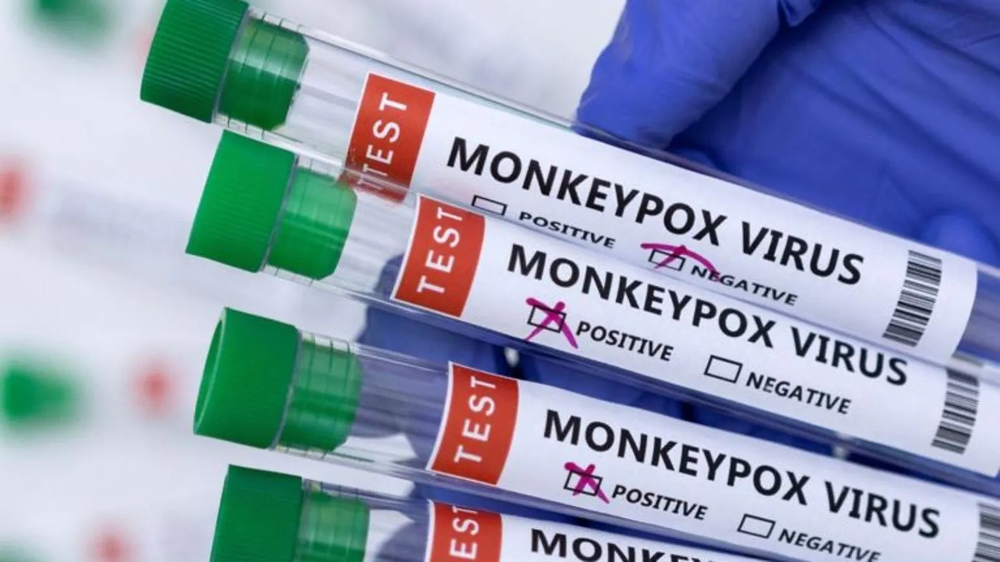

Monkeypox is an illness caused by the monkeypox virus. It is a viral zoonotic infection, meaning that it can spread from animals to humans. It can also spread from person to person.
Monkeypox can cause a range of signs and symptoms. While some people have mild symptoms, others may develop more serious symptoms and need care in a health facility. Those at higher risk for severe disease or complications include people who are pregnant, children and persons that are immunocompromised.
The most common symptoms of monkeypox include fever, headache, muscle aches, back pain, low energy, and swollen lymph nodes. This is followed or accompanied by the development of a rash which can last for two to three weeks. The rash can be found on the face, palms of the hands, soles of the feet, eyes, mouth, throat, groin, and genital and/or anal regions of the body. The number of lesions can range from one to several thousand. Lesions begin flat, then fill with liquid before they crust over, dry up and fall off, with a fresh layer of skin forming underneath.

Symptoms typically last two to three weeks and usually go away on their own or with supportive care, such as medication for pain or fever. People remain infectious until all of the lesions have crusted over, the scabs fallen off and a new layer of skin has formed underneath.
Anyone who has symptoms that could be monkeypox or who has been in contact with someone who has monkeypox should call or visit a health care provider and seek their advice.
The most common symptoms of monkeypox include fever, headache, muscle aches, back pain, low energy, and swollen lymph nodes. This is followed or accompanied by the development of a rash which can last for two to three weeks. The rash can be found on the face, palms of the hands, soles of the feet, eyes, mouth, throat, groin, and genital and/or anal regions of the body. The number of lesions can range from one to several thousand. Lesions begin flat, then fill with liquid before they crust over, dry up and fall off, with a fresh layer of skin forming underneath.

Symptoms typically last two to three weeks and usually go away on their own or with supportive care, such as medication for pain or fever. People remain infectious until all of the lesions have crusted over, the scabs fallen off and a new layer of skin has formed underneath.
Anyone who has symptoms that could be monkeypox or who has been in contact with someone who has monkeypox should call or visit a health care provider and seek their advice.
In most cases, the symptoms of monkeypox go away on their own within a few weeks. However, in some people, an infection can lead to medical complications and even death. Newborn babies, children and people with underlying immune deficiencies may be at risk of more serious symptoms and death from monkeypox.
Complications from monkeypox include secondary skin infections, pneumonia, confusion, and eye problems. In the past, between 1% to 10% of people with monkeypox have died. It is important to note that death rates in different settings may differ due to a number of factors, such as access to health care. These figures may be an overestimate because surveillance for monkeypox has generally been limited in the past. In the newly affected countries where the current outbreak is taking place, there have been no deaths to date.
Complications from monkeypox include secondary skin infections, pneumonia, confusion, and eye problems. In the past, between 1% to 10% of people with monkeypox have died. It is important to note that death rates in different settings may differ due to a number of factors, such as access to health care. These figures may be an overestimate because surveillance for monkeypox has generally been limited in the past. In the newly affected countries where the current outbreak is taking place, there have been no deaths to date.
Monkeypox can spread to people when they come into physical contact with an infected animal. Animal hosts include rodents and primates. The risk of catching monkeypox from animals can be reduced by avoiding unprotected contact with wild animals, especially those that are sick or dead (including their meat and blood). In endemic countries where animals carry monkeypox, any foods containing animal meat or parts should be cooked thoroughly before eating.
People who live with or have close contact (including sexual contact) with someone who has monkeypox, or who has regular contact with animals who could be infected, are most at risk. Health workers should follow infection prevention and control measures to protect themselves while caring for monkeypox patients.
Newborn infants, young children and people with underlying immune deficiencies may be at risk of more serious symptoms, and in rare cases, death from monkeypox.

People who were vaccinated against smallpox may have some protection against monkeypox. However, younger people are unlikely to have been vaccinated against smallpox because smallpox vaccination stopped in most settings worldwide after it was eradicated in 1980. People who have been vaccinated against smallpox should continue to take precautions to protect themselves and others.
Newborn infants, young children and people with underlying immune deficiencies may be at risk of more serious symptoms, and in rare cases, death from monkeypox.

People who were vaccinated against smallpox may have some protection against monkeypox. However, younger people are unlikely to have been vaccinated against smallpox because smallpox vaccination stopped in most settings worldwide after it was eradicated in 1980. People who have been vaccinated against smallpox should continue to take precautions to protect themselves and others.
Reduce your risk of catching monkeypox by limiting close contact with people who have suspected or confirmed monkeypox, or with animals who could be infected. Clean and disinfect environments that could have been contaminated with the virus from someone who is infectious regularly. Keep yourself informed about monkeypox in your area and have open conversations with those you come into close contact (especially sexual contact) with about any symptoms you or they may have.
If you think you might have monkeypox, you can act to protect others by seeking medical advice and isolating from others until have been evaluated and tested. If you have probable or confirmed monkeypox, you should isolate from others until all of your lesions have crusted over, the scabs have fallen off and a new layer of skin has formed underneath. This will stop you from passing on the virus to others. Get advice from your health worker on whether you should isolate at home or in a health facility. Until more is understood about transmission through sexual fluids, use condoms as a precaution whilst having sexual contact for 12 weeks after you have recovered.
If you think you might have monkeypox, you can act to protect others by seeking medical advice and isolating from others until have been evaluated and tested. If you have probable or confirmed monkeypox, you should isolate from others until all of your lesions have crusted over, the scabs have fallen off and a new layer of skin has formed underneath. This will stop you from passing on the virus to others. Get advice from your health worker on whether you should isolate at home or in a health facility. Until more is understood about transmission through sexual fluids, use condoms as a precaution whilst having sexual contact for 12 weeks after you have recovered.
Yes. A vaccine was recently approved for preventing monkeypox. Some countries are recommending vaccination for persons at risk. Many years of research have led to development of newer and safer vaccines for an eradicated disease called smallpox, which may also be useful for monkeypox. One of these has been approved for prevention of monkeypox. Only people who are at risk (for example someone who has been a close contact of someone who has monkeypox) should be considered for vaccination. Mass vaccination is not recommended at this time.

While the smallpox vaccine was shown to be protective against monkeypox in the past, current data on the effectiveness of newer smallpox/monkeypox vaccines in the prevention of monkeypox in clinical practice and in field settings are limited. Studying the use of vaccines for monkeypox wherever they are used will allow for rapid generation of additional information on the effectiveness of these vaccines in different settings.

While the smallpox vaccine was shown to be protective against monkeypox in the past, current data on the effectiveness of newer smallpox/monkeypox vaccines in the prevention of monkeypox in clinical practice and in field settings are limited. Studying the use of vaccines for monkeypox wherever they are used will allow for rapid generation of additional information on the effectiveness of these vaccines in different settings.